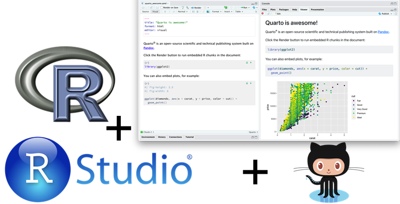
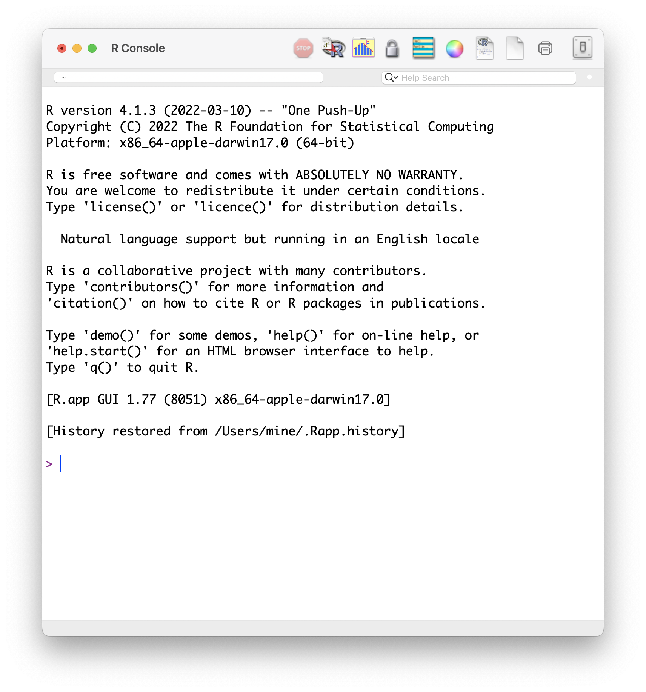
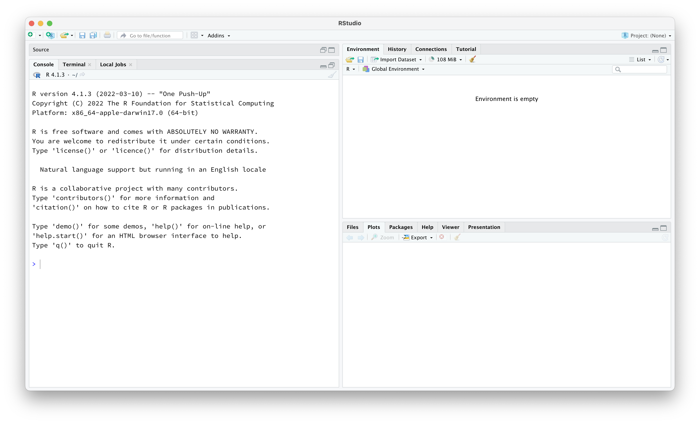
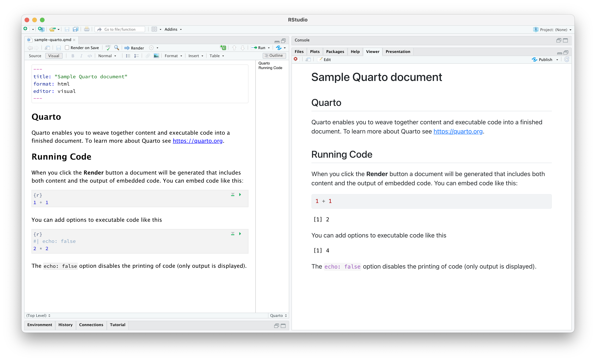
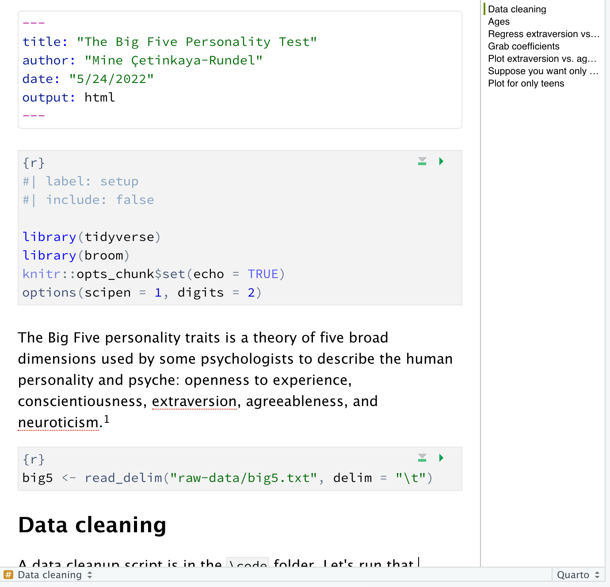
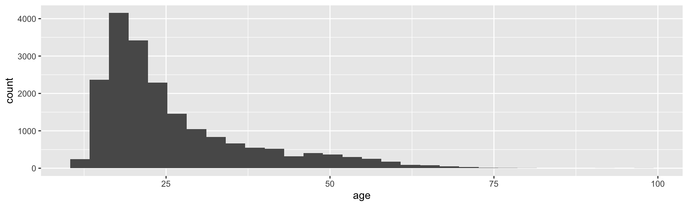
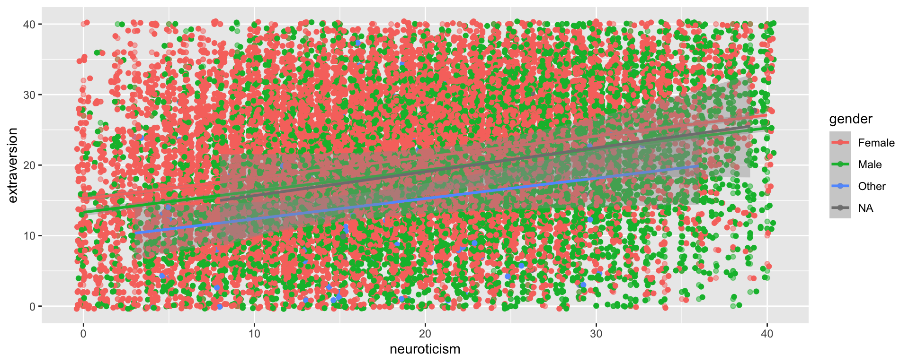
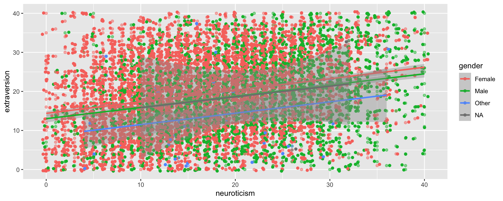

Part III - Reproducible computing
SSNAP 2022 - Statistical Analysis
Mine Çetinkaya-Rundel
slides at bit.ly/ssnap-2022
Reproducibility: who cares?
Science retracts gay marriage paper without agreement of lead author
In May 2015 Science retracted a study of how canvassers can sway people’s opinions about gay marriage published just 5 months earlier.
Science Editor-in-Chief Marcia McNutt: Original survey data not made available for independent reproduction of results.
- Survey incentives misrepresented.
- Sponsorship statement false.
Two Berkeley grad students who attempted to replicate the study quickly discovered that the data must have been faked.
Methods we’ll discuss today can’t prevent this, but they can make it easier to discover issues.
Bad spreadsheet merge kills depression paper, quick fix resurrects it
Original conclusion: Lower levels of CSF IL-6 were associated with current depression and with future depression […].
Revised conclusion: Higher levels of CSF IL-6 and IL-8 were associated with current depression […].
Divorce study felled by a coding error gets a second chance
Original conclusion: The risk of divorce in a heterosexual marriage increases when the wife falls ill, but not the husband.
Corrected conclusion: Based on the corrected analysis, we conclude that there are not gender differences in the relationship between gender, pooled illness onset, and divorce.
Divorce study retraction: Editor’s note
“The research environment is fast-paced given the ethos to”publish or perish”.”
“[…] research is becoming increasingly complex, with greater calls for transdisciplinary collaborations,”big data,” and more sophisticated research questions and methods […] data sets often have multiple files that require merging, change the wording of questions over time, provide incomplete codebooks, and have unclear and sometimes duplicative variables.”
“Given these issues, I would not be surprised if coding errors were fairly common […]”
Reproducibility: why should you care?
Think back to every time…
- The results in Table 1 don’t seem to correspond to those in Figure 2.
- In what order do I run these scripts?
- Where did we get this data file?
- Why did I omit those samples?
- How did I make that figure?
- “Your script is now giving an error.”
- “The attached is similar to the code we used.”
No collaborators?
Your closest collaborator is you six months ago, but you don’t reply to emails.
- Mark Holder
Reproducibility: how?
Reproducibility checklist
- Are the tables and figures reproducible from the code and data?
- Does the code actually do what you think it does?
- In addition to what was done, is it clear why it was done? (e.g., how were parameter settings chosen?)
- Can the code be used for other data?
- Can you extend the code to do other things?
Ambitious goal + many other concerns
We need an environment where
data, analysis, and results are tightly connected, or better yet, inseparable
reproducibility is built in
- the original data remains untouched
- all data manipulations and analyses are inherently documented
documentation is human readable and syntax is minimal
Toolkit
Outline
Scriptability \(\rightarrow\) R
Literate programming \(\rightarrow\) Quarto
Version control \(\rightarrow\) Git / GitHub
1. Scriptability
Point-and-click vs. scripting
Learning curve: Point-and-click software (supposedly) have shallower learning curves than scripting languages
Documentation: At a minimum, your code documents your analysis
- And you can do better with comments and README files
Automation: Need to rerun your analysis with new/updated data? Just change the input file.
Collaboration: Sharing your analysis is as easy as sharing your scripts
Why R?
- Programming language for data analysis
- Free!
- Open source
- Widely used and supported across all disciplines
- Can be used on Windows, Mac OS X, or Linux
- Thousands of statistical data analysis packages

Why not language X?
There are a number of other great programming tools out there that can also be used to improve the reproducibility of your analysis
The key is to use some type of language that will allow you to automate and document your analysis
Once you master one language you’ll probably find it easier to learn another
Once in R
You could just type into the command prompt, but that doesn’t help much with
- documentation
or
- automation
2. Literate programming
Donald Knuth “Literate Programming (1983)”
“Instead of imagining that our main task is to instruct a computer what to do, let us concentrate rather on explaining to human beings what we want a computer to do.”
“The practitioner of literate programming […] strives for a program that is comprehensible because its concepts have been introduced in an order that is best for human understanding, using a mixture of formal and informal methods that reinforce each other.”
- These ideas have been around for years!
- and tools for putting them to practice have also been around
- but they have never been as accessible as the current tools
A better solution than just R
With RStudio you can combine your programming and your documentation
- Gives you a single environment to combine your documentation and your analysis
- Runs on top of R

What is Quarto?
Quarto is an open-source scientific and technical publishing system
Ease of Markdown syntax
Rendering of R/Python/Julia/Observable code to produce output and plots
Ability to include LaTeX: \(\hat{y} = \beta_0 + \beta_1 \times x\)
Sample Quarto document
Another Quarto document
This presentation!
Example: Big Five Personality Test
The Big Five personality traits is a theory of five broad dimensions used by some psychologists to describe the human personality and psyche: openness to experience, conscientiousness, extraversion, agreeableness, and neuroticism.
Load data with an R chunk:
Under the hood
View data
# A tibble: 19,719 × 57
race age engnat gender hand source country E1 E2 E3 E4 E5
<dbl> <dbl> <dbl> <dbl> <dbl> <dbl> <chr> <dbl> <dbl> <dbl> <dbl> <dbl>
1 3 53 1 1 1 1 US 4 2 5 2 5
2 13 46 1 2 1 1 US 2 2 3 3 3
3 1 14 2 2 1 1 PK 5 1 1 4 5
4 3 19 2 2 1 1 RO 2 5 2 4 3
5 11 25 2 2 1 2 US 3 1 3 3 3
6 13 31 1 2 1 2 US 1 5 2 4 1
7 5 20 1 2 1 5 US 5 1 5 1 5
8 4 23 2 1 1 2 IN 4 3 5 3 5
9 5 39 1 2 3 4 US 3 1 5 1 5
10 3 18 1 2 1 5 US 1 4 2 5 2
# … with 19,709 more rows, and 45 more variables: E6 <dbl>, E7 <dbl>, E8 <dbl>,
# E9 <dbl>, E10 <dbl>, N1 <dbl>, N2 <dbl>, N3 <dbl>, N4 <dbl>, N5 <dbl>,
# N6 <dbl>, N7 <dbl>, N8 <dbl>, N9 <dbl>, N10 <dbl>, A1 <dbl>, A2 <dbl>,
# A3 <dbl>, A4 <dbl>, A5 <dbl>, A6 <dbl>, A7 <dbl>, A8 <dbl>, A9 <dbl>,
# A10 <dbl>, C1 <dbl>, C2 <dbl>, C3 <dbl>, C4 <dbl>, C5 <dbl>, C6 <dbl>,
# C7 <dbl>, C8 <dbl>, C9 <dbl>, C10 <dbl>, O1 <dbl>, O2 <dbl>, O3 <dbl>,
# O4 <dbl>, O5 <dbl>, O6 <dbl>, O7 <dbl>, O8 <dbl>, O9 <dbl>, O10 <dbl>Follow along
If you’d like to follow along, go to bit.ly/ssnap-2022-rscloud.
Clean data
You can include script files in your R Markdown document

View distribution of age
Extraversion vs. neuroticism + gender
Extraversion: Seeking fulfillment from sources outside the self or in community. High scorers are social, low scorers prefer to work alone.
Neuroticism: Being emotional.
# A tibble: 6 × 5
term estimate std.error statistic p.value
<chr> <dbl> <dbl> <dbl> <dbl>
1 (Intercept) 15.2 0.190 79.9 0
2 neuroticism 0.297 0.00961 30.9 4.50e-205
3 genderMale -1.89 0.327 -5.78 7.42e- 9
4 genderOther -5.72 2.18 -2.63 8.61e- 3
5 neuroticism:genderMale 0.00158 0.0152 0.104 9.18e- 1
6 neuroticism:genderOther -0.00833 0.125 -0.0665 9.47e- 1Grab coefficients
Slope for neuroticism is 0.297.
Plot extraversion vs. age and gender
Suppose you want only teens
# A tibble: 6 × 5
term estimate std.error statistic p.value
<chr> <dbl> <dbl> <dbl> <dbl>
1 (Intercept) 14.1 1.44 9.82 1.26e-22
2 age 0.301 0.0850 3.54 4.04e- 4
3 genderMale 6.79 2.48 2.74 6.13e- 3
4 genderOther 6.66 11.0 0.605 5.45e- 1
5 age:genderMale -0.421 0.146 -2.88 3.95e- 3
6 age:genderOther -0.762 0.664 -1.15 2.51e- 1Plot for only teens
3. Version control
What is version control?
Version control is a system that records changes to a file or set of files over time so that you can recall specific versions later.
Bad

Source: Piled Higher and Deeper by Jorge Cham, http://www.phdcomics.com.
Good
2013-10-14_manuscriptFish.doc
2013-10-30_manuscriptFish.doc
2013-11-05_manusctiptFish_intitialRyanEdits.doc
2013-11-10_manuscriptFish.doc
2013-11-11_manuscriptFish.doc
2013-11-15_manuscriptFish.doc
2013-11-30_manuscriptFish.doc
2013-12-01_manuscriptFish.doc
2013-12-02_manuscriptFish_PNASsubmitted.doc
2014-01-03_manuscriptFish_PLOSsubmitted.doc
2014-02-15_manuscriptFish_PLOSrevision.doc
2014-03-14_manuscriptFish_PLOSpublished.docBetter - Saving everything together at once
Every time you make a save, you zip the entire directory that your project files are in and save it with a date.
Best - Version Control

How does version control work?
Start with a base version of the document, save just the changes you made at each step of the way.
Think of it as a tape: if you rewind the tape and start at the base document, then you can play back each change and end up with your latest version.

- “Playing back” different sets of changes onto the base document and getting different versions of the document.

Git/GitHub
- Easy to set up
- Integrated with RStudio
- GitHub’s strong community: your colleagues are probably already there
- Provides tools to help enhance collaboration
- A common location to share your work
Commits

Diff

Parting remarks
Two-pronged approach
Everyone struggles with reproducibility and it is a hindrance to moving science forward.
#1 Adopt a reproducible research workflow
#2 Train new researchers who don’t have any other workflow

Resources
Slides and repository for this talk: https://github.com/mine-cetinkaya-rundel/ssnap-2018
Quarto: https://quarto.org
R, RStudio, and git: https://happygitwithr.com
Reproducible Research Curriculum (Data Carpentry): https://datacarpentry.org/rr-intro/aio.html